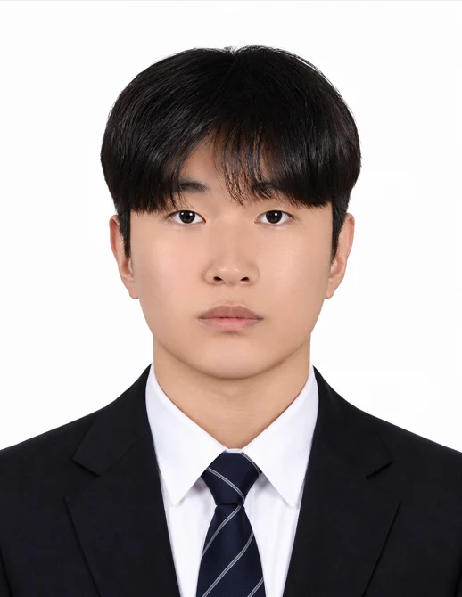

PORTFOLIO / 2026
이승열
RTL Design & Verification
RTL 설계에서 검증, FPGA 보드 연동까지.
데이터의 값과 전달 시점을 함께 확인합니다.
tmdduf1101@naver.com
github.com/lsy49055089

Technical Skills
RTL Design
Verilog · SystemVerilog
FSM / Datapath · 영상 좌표 처리
Design Verification
SystemVerilog TB · UVM
Scoreboard · Assertion · Coverage
FPGA & SoC
Vivado / Vitis · Zynq · MicroBlaze
AXI4-Lite · UART · SPI · I2C
Embedded & Software
C · Python · C# / Unity
STM32 · ESP32 · Linux · Git
Education & Research
국립한국교통대학교 전자공학과
2020.03 — 2026.02 · 학사 · GPA 3.54 / 4.5
서울기술교육센터 · 온디바이스 AI 시스템반도체 설계 2기
2026.03 — 2026.10
한국스마트미디어학회 추계학술대회 제1저자 발표
2025.11.15 · 병렬 구조 기반 결정트리 하드웨어 설계 및 분석
최종 프로젝트 경진대회 최우수상
2026.10.15 · 7인 팀 · 5개 팀 중 2위 / 전체 34명
PROJECTS / 1 / 3
RESEARCH · FIRST AUTHOR
병렬 결정트리 RTL
2025.07 — 2025.11 · 학부 연구
현재 노드와 좌우 자식 노드를 함께 계산해, 한 입력 벡터의 트리 탐색 시간을 줄인 하드웨어입니다.
담당 3-UN Datapath·FSM 설계, 결과 동등성 검증, 제1저자 논문 작성·발표
결과 논문 실험 평균 1.37× · RTL 회귀 37/37
Icarus Verilog에서 동일한 입력 벡터 37개를 사용했습니다. 6-state와 4-state의 분류 결과가 모두 일치했고, 37개 벡터의 전체 완료 사이클은 293 → 255로 줄었습니다. DONE-state assertion과 기대 클래스 비교를 자동화했습니다.
GitHub · 코드와 검증 자료 ↗TEAM PROJECT · 최우수상
CNN 모션인식 SoC 플랫폼
2026.09.09 — 2026.10.15 · 7인 팀
두 카메라의 관절 인식을 Zynq 5축 로봇팔의 실시간 추종과 동작 기록·재생으로 연결했습니다.
담당 AXI4-Lite PWM IP, C 출력 제어·Record/Replay, 그리퍼 안정화, Unity 가상환경
결과 5축 · 20 ms 제어 · 최우수상
유효한 한쪽 카메라만으로 그리퍼를 판단하도록 바꿨습니다. 히스테리시스·새 관측 3회 확인·닫힘 후 1.5초 유지로 순간 잡음을 억제했습니다. 150 mm 좌표 도약 검사·재획득과 20 ms 궤적 제한을 연결해 갑작스러운 입력이 출력으로 바로 이어지지 않도록 했습니다.
GitHub · 코드와 검증 자료 ↗PROJECTS / 2 / 3
INDIVIDUAL · HW / SW
MicroBlaze AXI4-Lite IP
2026.06.22 — 2026.06.30 · 개인 프로젝트
5종 Custom IP와 C MMIO 드라이버를 설계하고 두 대의 FPGA 보드 통신까지 연결했습니다.
담당 GPIO·Timer·UART·SPI·I2C LCD IP, Register Map, Vitis C 제어, 보드 통합
결과 IP 5종 · SPI 32/32 · I2C 30/30 PASS
AXI-SPI UVM 32/32, I2C 통신 UVM 30/30 PASS와 실제 보드 통신을 확인했습니다. 이 시험은 별도의 SPI·I2C 단독 UVM 10,000건 확장 회귀와 구분합니다.
GitHub · 코드와 검증 자료 ↗TEAM PROJECT · VIDEO RTL
FPGA 영상 좌표 처리 · 지휘 게임
2026.08.31 — 2026.09.07 · 7인 팀
OV7670 영상의 빨강·초록 표식 좌표를 계산하고 지휘 게임과 PC MAESTRO UI에 전달했습니다.
담당 xy_detection·song_decoder RTL/TB, 군집화·프레임 동기화, FPGA–PC UI 연동
결과 320×240 입력 · RED/GREEN X·Y 40-bit
xy_detection TB에서 좌표 출력·미검출·Ready/Valid 조건을, song_decoder TB에서 곡 선택·BPM을 확인했습니다. UART로 전달한 좌표를 PC 검출 영상에 표시하고 MAESTRO UI·MIDI 재생까지 연동했습니다.
GitHub · 코드와 검증 자료 ↗PROJECTS / 3 / 3
INDIVIDUAL · SELF-CHECKING TB
SPI · I2C UVM 검증
2026.06 · 추가 검증 2026.10 · 개인 프로젝트
정상·오류 응답을 자동 비교하고, 무작위 트랜잭션과 Functional Coverage로 검증 조건을 확인했습니다.
담당 UVM 환경·Driver·Monitor·Scoreboard·Coverage, Directed / Random 시나리오
결과 SPI·I2C 각각 10,000 transactions · 0 FAIL
정상 주소·잘못된 주소·Read/Write·ACK/NACK 조건을 포함한 4개 동작을 각 2,500회 수행했습니다. 10,000 트랜잭션에서 17,500개 Scoreboard 검사 PASS / 0 FAIL입니다. 트랜잭션 수와 검사 수는 서로 다릅니다.
GitHub · 코드와 검증 자료 ↗INDIVIDUAL · CLASS-BASED TB
UART · FIFO · Parity 검증
2026.05.12 — 2026.05.18 · 개인 프로젝트
UART Loopback과 이중 FIFO의 데이터 순서를 비교하고 Parity 오류가 송신 경로로 전달되지 않는지 확인했습니다.
담당 UART/FIFO RTL, Class-based TB, Reference Queue, 오류 주입·차단 검증
결과 16-entry FIFO · Odd Parity 오류 주입
중앙 Sampling 기준으로 Start-bit 수신 시점을 맞춰 한 비트 밀림을 수정했습니다. RX FIFO Push 조건에 Parity 오류 차단을 추가해 오류 데이터의 재전송을 막았습니다.
GitHub · 코드와 검증 자료 ↗